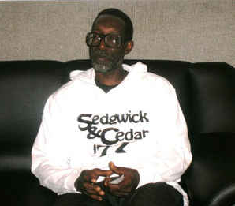

Rap originated from a Jamaican tradition called toasting. It was turned in to hip hop in the late 70s, by a Jamaican immigrant.

Coke LA Rock was the first person known to start rhyming in hip hop and rap.
DJ Kool Herc was the first DJ and first person to start rap and did work with several people. Later rap was a lyrical way to promote certain issues in the world like minority issues and gang rap. Rap eventually turned in to a genre of mostly talking about girls. Rap is now a very wide range genre of music having many different meanings and many different kinds of itself. Rap and Hip Hop is a way to express yourself now with less judgment from the world. Rappers focus on more political topic. Rap and Hip Hop/R&B are about love and depression but not just depression but people's inner demons/ feelings.